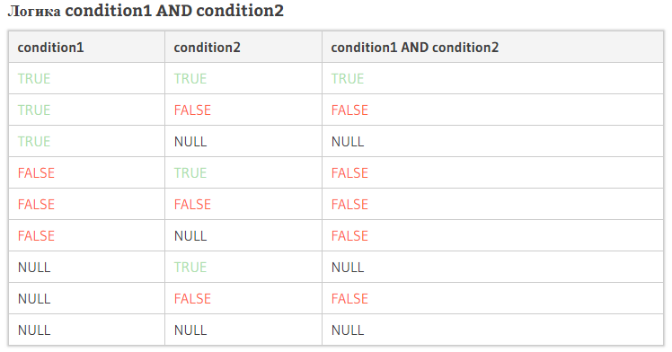
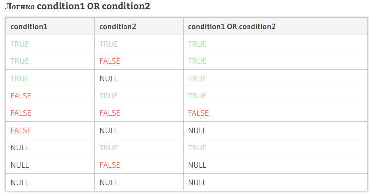

- Логические
- Поиск в строке
- Null значение
- Дополнительные
Логические
AND условие
Oracle условие AND (называемое, также оператор AND) используется для проверки в двух или более условий операторов SELECT, INSERT, UPDATE или DELETE.

OR условие
Oracle условие OR (называемое, также оператор OR) используется для проверки нескольких условий, в которых записи возвращаются, когда какое-либо из условий истинно. Может быть использовано в SELECT, INSERT, UPDATE или DELETE.

NOT оператор
Oracle условие NOT (также называется NOT оператор) используется для отрицания условия в предложениях SELECT, INSERT, UPDATE или DELETE.
Поиск в строке
LIKE оператор
Oracle оператор LIKE допускает групповые символы, которые будут использоваться в операторе WHERE в предложениях SELECT, INSERT, UPDATE или DELETE. Это позволяет выполнять поиск по шаблону.
% Соответствует любой строке любой длины (в том числе нулевой длины)
_ Соответствует одному символу
REGEXP_LIKE
Oracle условие REGEXP_LIKE позволяет выполнять регулярные выражения в предложении WHERE в запросах SELECT, INSERT, UPDATE или DELETE.
^ Соответствует началу строки. При использовании match_parameter с ‘m’, соответствует началу строки в любом месте в пределах выражения.
$ Соответствует концу строки. При использовании match_parameter с ‘m’, соответствует концу строки в любом месте в пределах выражения.
* Соответствует нолю или более вхождений.
+ Соответствует одному или более вхождений.
? Соответствует нолю или одному вхождению.
. Соответствует любому символу, кроме NULL.
| Используется как «OR», чтобы указать более одной альтернативы.
[ ] Используется для указания списка совпадений, где вы пытаетесь соответствовать любому из символов в списке.
[^ ] Используется для указания списока nonmatching, где вы пытаетесь соответствовать любому символу, за исключением тех кто в списке.
( ) Используется для групповых выражений в качестве подвыражений.
{m} Соответствует m раз.
{m,} Соответствие как минимум m раз.
{m,n} Соответствие как минимум m раз, но не более n раз.
\n n представляет собой число от 1 до 9. Соответствует n-му подвыражению находящемуся в ( ) перед \n.
[..] Соответствует одному сопоставлению элемента, который может быть более одного символа.
[::] Соответствует классу символов.
[==] Соответствует классу эквивалентности
\d Соответствует цифровому символу.
\D Соответствует не цифровому символу.
\w Соответствует текстовому символу.
\W Соответствует не текстовому символу.
\s Соответствует символу пробел.
\S Соответствует не символу пробел.
\A Соответствует началу строки или соответствует концу строки перед символом новой строки.
\Z Соответствует концу строки.
*? Соответствует предыдущему шаблону ноль или более вхождений.
+? Соответствует предыдущему шаблону один или более вхождений.
?? Соответствует предыдущему шаблону ноль или одному вхождению.
{n}? Соответствует предыдущему шаблону n раз.
{n,}? Соответствует предыдущему шаблону, по меньшей мере n раз.
{n,m}? Соответствует предыдущему шаблону, по меньшей мере n раз, но не более m раз.
IN условие
Oracle условие IN (называемое, также оператор IN) определяет, соответствует ли значение или список значений выражению в указанном результирующем наборе SELECT, INSERT, UPDATE или DELETE.
Null значение
Is Null
Oracle условие IS NULL используется для проверки значения NULL. Вы можете использовать условие IS NULL или в SQL предложении или в блоке PLSQL кода.
Is Not Null
Oracle условие IS NOT NULL используется для проверки на значение NOT NULL. Вы можете использовать Oracle условие IS NOT NULL или в SQL предложении или в блоке PLSQL кода.
Дополнительные
Between
Oracle условие BETWEEN (называемое, также оператор BETWEEN) используется для получения значений в пределах диапазона в предложениях SELECT, INSERT, UPDATE или DELETE.
Pivot
Oracle PIVOT позволяет написать перекрестный запрос таблицы, начал использоваться в Oracle 11g. Это означает, что вы можете объединить свои результаты и повернуть строки в столбцы.
SELECT * FROM
(
SELECT column1, column2 FROM tables
WHERE conditions
)
PIVOT
(
aggregate_function(column2)
FOR column2
IN ( expr1, expr2, … expr_n) | subquery
)
ORDER BY expression [ ASC | DESC ];